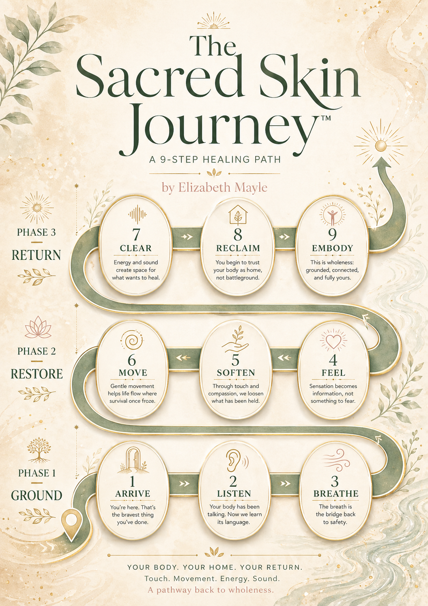
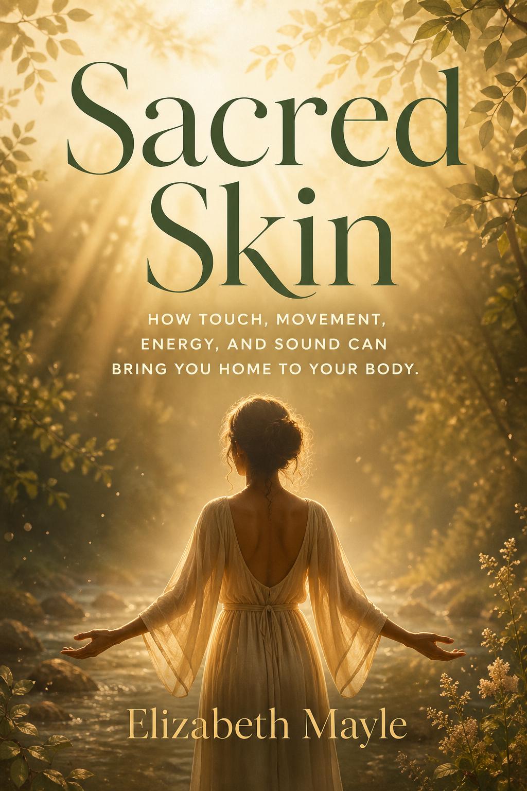

Healing from the skin in
The Sacred Skin Method™ helps women who've experienced sexual abuse come home to their bodies — through touch, movement, energy, and sound.
Does this sound like you?
You understand your trauma. You can narrate it with clarity. But your body still braces. Still flinches. Still holds its breath.
"I know I'm safe. My mind knows it. But my body still scans every room for exits — and I'm exhausted from the effort of appearing normal."
"I flinch when my husband reaches for me, and then I feel guilty about it. I've done years of therapy. Why can't my body just... let go?"
"I tried a yoga class once and the instructor told me to 'open my hips and let go.' I nearly had a panic attack on the mat. I never went back."
"I've read The Body Keeps the Score. I highlighted half of it. But knowing my body stores trauma doesn't teach me how to release it safely."
"I don't even know what it feels like to be IN my body. I've been living above my neck for years. I want to feel like my skin is MINE again."
"I look at other women who seem comfortable in their own skin and I wonder what that feels like. I'm so tired of being strong. I just want to feel safe."
The Sacred Skin Method™
Most approaches to trauma healing work from the neck up. This one works from the skin in — because your body is where the trauma lives, and your body is where the healing happens.
Massage & Bodywork
Unlocking trauma stored in your tissues through safe, intentional therapeutic touch. Your body held on to protect you — now it learns to let go.
Yoga & Movement
Coming home to your body through breath, gentle movement, and embodied awareness. Learning your body is a sanctuary, not a source of pain.
Energy Medicine
Clearing the invisible patterns beneath the surface — energetic wounds and disrupted fields that talk therapy can't reach.
Sound Therapy
Using vibrational frequencies to reset your nervous system and create a felt sense of safety that goes deeper than words.
Your Proven Process
Every client follows this exact 9-step path — from survival to sovereignty. Three phases. Nine steps. One transformation.

Work With Elizabeth
Meet yourself where you are. Every option is a doorway to feeling safe in your own skin again.
5 Somatic Practices to Feel Safe in Your Own Skin — a downloadable guide introducing the Sacred Skin framework.
Live weekly sessions combining trauma-informed yoga, sound healing, energy medicine, and somatic integration in a safe group container.
A fully personalized healing journey including massage, yoga, energy medicine, and sound therapy. In person or virtual.
Meet Elizabeth
Elizabeth Mayle is a somatic healing practitioner and the creator of the Sacred Skin Method™ — a body-based approach to healing from sexual trauma through massage, yoga, energy medicine, and sound therapy.
Trained through Briana Borten's Spirit Medicine Academy in Entheos Energy Medicine, Elizabeth is a licensed massage therapist, yoga teacher, and sound healing practitioner who works with women both in person and virtually.
Her work is rooted in one belief: your body is where trauma lives — and your body is where healing begins.

The Book
A Body-Based Path to Healing After Sexual Abuse — How Touch, Movement, Energy, and Sound Can Bring You Home to Your Body.
Part memoir, part method, part guided practice — Sacred Skin walks you through Elizabeth's complete framework for healing from the skin in. Ten chapters of somatic wisdom, practical exercises, and the radical reframe that changes everything: your body didn't betray you. Your body survived for you.
Free Guide — No commitment required
Download "The Body After Trauma: 5 Somatic Practices to Feel Safe in Your Own Skin" — and take the first step toward coming home to your body.